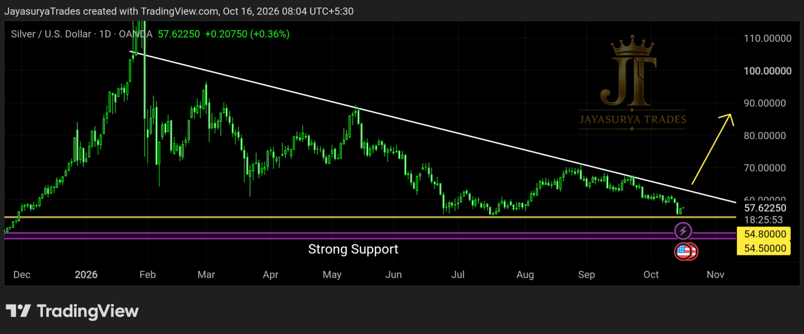

For this Friday Market Focus, I am looking at Silver / XAGUSD. In the previous analysis, I marked the immediate support zone at 54.5–54.8 and said price could fall toward this area. One week later, price has moved close to the support zone identified in that analysis.
The market continues to respect a descending trendline and is now approaching an important decision area. Price could break above the descending trendline and begin a potential upward reversal, or break below the 54.5–54.8 support zone. I am waiting for confirmation rather than assuming either outcome.

Current Market Structure
Silver has been moving along a descending trendline pattern, and the trendline has been respected so far. Price has now approached the immediate support zone at 54.5–54.8. The next move depends on whether price breaks above the descending trendline or falls below this support zone.
If price breaks above the descending trendline and a candle closes above it on the daily timeframe, a potential reversal toward an uptrend may develop. Until that confirmation appears, the bullish scenario remains unconfirmed.
Bullish confirmation → A daily candle close above the descending trendline
Support-break scenario → A break below the 54.5–54.8 zone
Next major support zone → 48.0–50.0 if the immediate support breaks
54.5–54.8 — The Immediate Support Zone
This is the immediate support zone identified in the previous analysis, and price has now moved close to it. At this area, I do not want to look for sell entries without considering the support below price. The next major support zone I am watching is 48.0–50.0, where price may find stronger support.
Price must show its next direction clearly. A break below 54.5–54.8 could bring the 48.0–50.0 zone into focus. However, the market's reaction at that lower zone would still need to be observed; support holding there is a possibility, not a certainty.
Bullish Scenario — Descending Trendline Breakout
If Silver breaks above the descending trendline and a candle closes above it on the daily timeframe, a potential reversal may begin and the market could transition into an uptrend. This is the confirmation I am waiting for before considering a bullish direction.
Even if price approaches or briefly moves above the trendline, I will wait for the daily candle close to confirm the break. Until the trendline is broken and confirmed, I will not look for a buy entry.
Confirmation to Watch
The key condition is a daily candle close above the descending trendline. If this occurs, the bullish reversal scenario gains support from the price action. If the breakout is not confirmed, I will continue to wait rather than anticipate an uptrend.
Alternative Scenario — Immediate Support Breakdown
If price breaks below the 54.5–54.8 immediate support zone, the next major support area I am watching is 48.0–50.0. This is a possible downside path if the current support fails, not a prediction that price must reach that zone.
The 48.0–50.0 area is the major support zone identified in this analysis. I expect it may provide stronger support, but the market's actual reaction will determine whether the zone holds. No outcome should be assumed before price reaches the area and confirms its behaviour.
What I Am Watching Now
Scenario 1 — Daily Close Above the Descending Trendline
If a daily candle closes above the descending trendline, a potential upward reversal may develop. I will wait for this confirmation before considering a buy-side setup.
Scenario 2 — Price Remains Below the Descending Trendline
Until price breaks above the descending trendline with a daily candle-close confirmation, the potential bullish reversal remains unconfirmed. My plan is to avoid forcing either a buy or a sell entry while price is at this decision area.
Scenario 3 — Break Below 54.5–54.8
If the immediate support zone breaks, the next major support area to watch is 48.0–50.0. The reaction at that zone will be important, and its ability to hold must be confirmed by price.
Key Takeaways
- The previous analysis identified 54.5–54.8 as immediate support, and price has now moved close to that zone.
- The descending trendline has been respected and remains the key upside decision point.
- A daily candle close above the descending trendline could support a potential upward reversal.
- A break below 54.5–54.8 could bring the 48.0–50.0 major support zone into focus.
- The 48.0–50.0 zone may provide stronger support, but its reaction must be confirmed by the market.
- Until the descending trendline breaks upward with confirmation, I will not look for a buy entry.
- At the current decision area, I will avoid forcing either a buy or a sell entry and wait for confirmation.
Watch the descending trendline.
Respect the 54.5–54.8 support zone.
Wait for the daily candle to confirm the move.
One day. One market. One focused analysis.
Levels. Structure. Scenarios. Confirmation.
No hype. Just how the market behaves.
Watch. Wait. Confirm. 👀
Risk Disclaimer
This analysis is provided for educational and informational purposes only and should not be considered financial advice or a recommendation to buy or sell any financial instrument.
Trading involves substantial risk. Always conduct your own research and follow your own trading plan and risk-management rules.